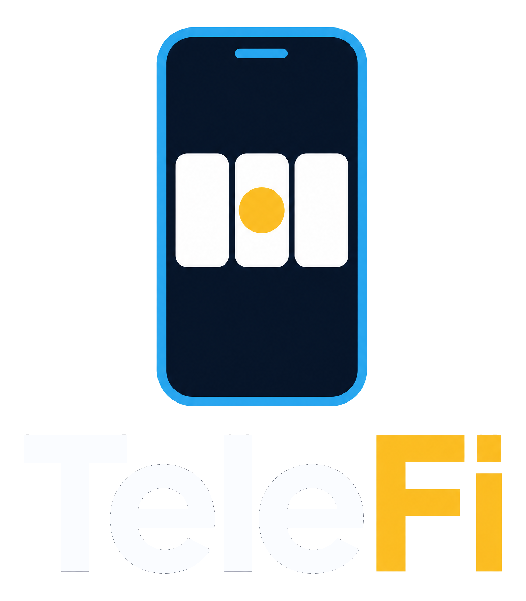
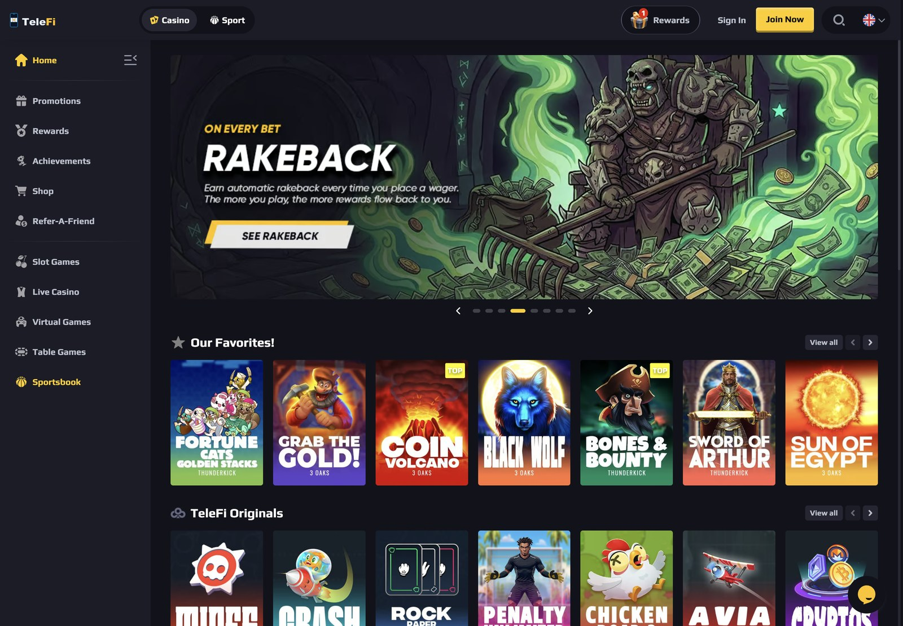
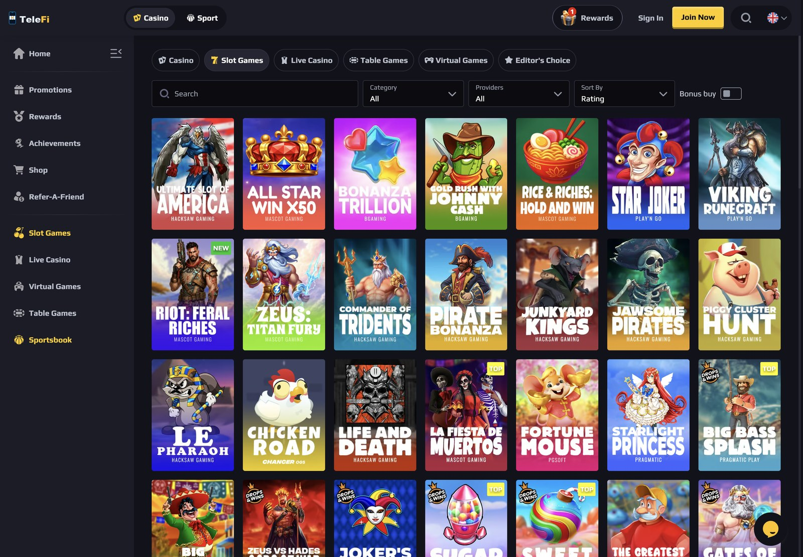
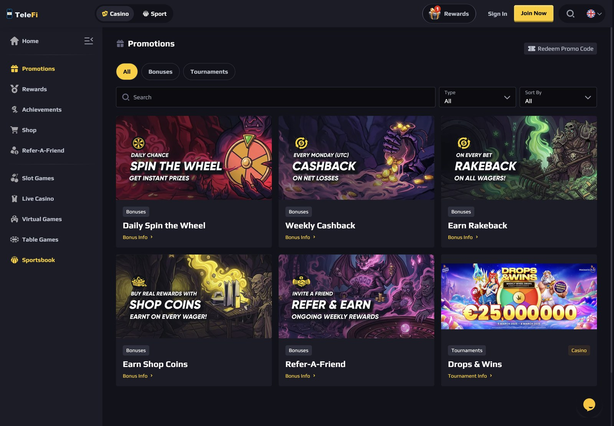
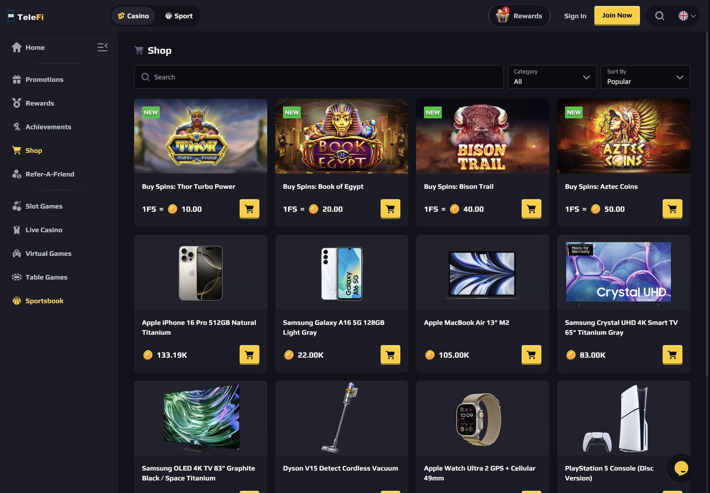
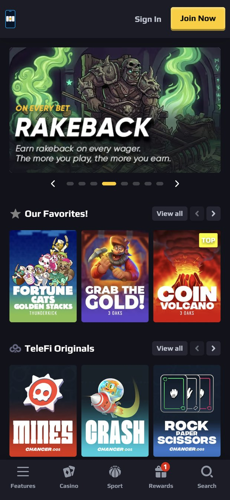
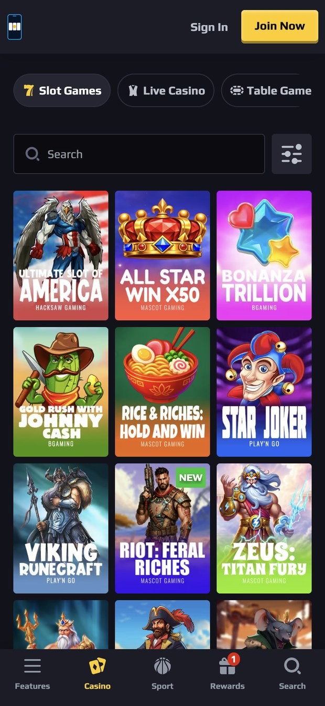
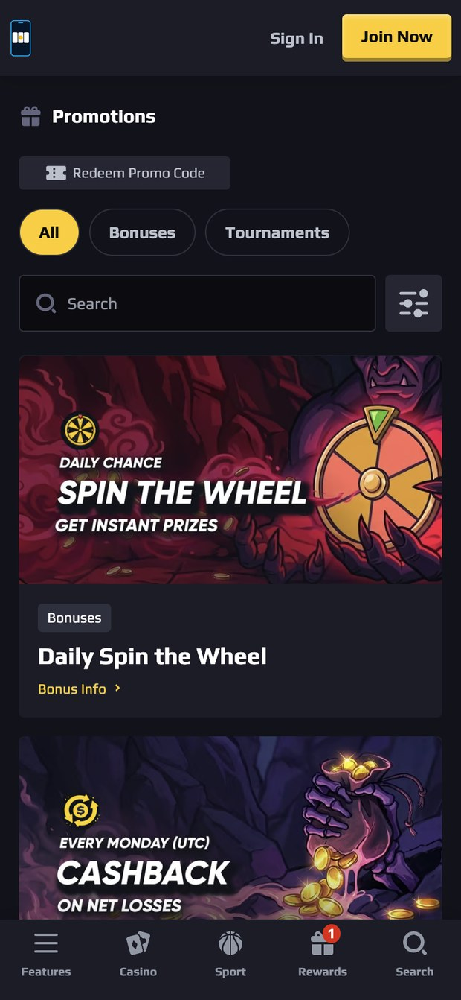

텔레파이는 스핀파이의 시즌2입니다. 슬롯 전문이던 시즌1에서 확장해, NuxGame이 공급하는 슬롯·카드(테이블)·라이브 카지노·미니게임 전체를 — 스포츠북만 제외하고 — 텔레그램 미니앱과 웹에서 동시에 서비스합니다.
텔레파이는 서로 다른 세 성장 곡선의 교차점에 서 있습니다: 온라인 겜블링의 구조적 성장, 크립토 결제의 주류화, 그리고 텔레그램 미니앱 경제의 폭발.
설치도 회원가입도 없습니다. 봇을 열면 게임 로비까지 3초. @wallet의 USDT(TON)로 입금 마찰이 사실상 0이고, 채널·그룹·봇이 그대로 마케팅 채널이 됩니다. 리텐션 알림도 푸시가 아니라 텔레그램 메시지 — 오픈률이 다른 어떤 채널보다 높습니다.
같은 계정·같은 지갑·같은 로비를 브라우저에서. 텔레그램 밖 트래픽(SEO·어필리에이트·리뷰 사이트)을 받는 그물이자, 데스크톱 하이롤러와 라이브 카지노 몰입 세션의 자리입니다. chancer.bet이 증명한 NuxGame 웹 스택 그대로.
| 지표 | 일반 웹 카지노 | 텔레그램 미니앱 |
|---|---|---|
| 첫 게임까지 단계 | 방문 → 가입 → KYC → 입금 앱 이동 → 복귀 (5단계+) | 봇 열기 → @wallet 입금 (2단계, ~3초 진입) |
| 유저 획득 비용(CAC) | 광고 → 랜딩 → 전환 누수 큼 | 채널·그룹 딥링크 직결 — 업계 최저 수준 CAC 구조 |
| 리텐션 채널 | 이메일·푸시 (오픈률 한 자릿수) | 텔레그램 메시지 — 유저가 이미 사는 곳 |
| 결제 | 카드·PSP 수수료와 거절율 | USDT(TON) 네이티브 — 수수료 ~0, 즉시 확정 |
아래 화면은 NuxGame 턴키로 실제 운영 중인 chancer.bet의 라이브 화면에 텔레파이 로고를 적용한 것입니다. 텔레파이가 받게 될 프런트엔드가 바로 이 스택이며, 데스크톱과 모바일이 같은 계정·같은 지갑을 공유합니다.







버티컬마다 "얼마나 남고(하우스 엣지), 얼마를 내는가(스튜디오 요율)"가 다릅니다. 아래 요율은 NuxGame 공식 견적서(2026-08-09)의 실제 수치이고, 엣지는 업계 표준 RTP에서 도출한 모델값입니다.
| 버티컬 | 대표 스튜디오 (NuxGame 요율) | 하우스 엣지 (베팅액 대비) | 콘텐츠 요율 (GGR 대비) | 기본 믹스 |
|---|---|---|---|---|
| 슬롯 | Hacksaw 12% · Pragmatic 11% · BGaming 9% · PG Soft 9% | 4.0% (RTP 96%) | 10.5% | 50% |
| 라이브 카지노 | Evolution 14% · Ezugi 12% · Vivo | 2.8% | 13.0% | 20% |
| 미니게임 · 크래시 | Spribe(Aviator) 11% · InOut 8.5% · Turbo | 3.0% (RTP ~97%) | 9.5% | 20% |
| 카드 · 테이블 (RNG) | Evoplay · Platipus · 3 Oaks | 3.0% | 10.0% | 10% |
기본 믹스(균형형) 기준 블렌디드 하우스 엣지 ≈ 3.46%, 블렌디드 콘텐츠 요율 ≈ 10.7% + NuxGame 플랫폼 4% = 총 벤더 비용 ≈ GGR의 14.7%. 텔레그램 유저층은 미니게임 스큐가 강해 §5 시뮬레이터에서 믹스를 바꿔볼 수 있습니다.
수수료율은 NuxGame 견적서 실제 수치, 엣지는 업계 표준 모델값. 모든 결과는 가정 기반 추정입니다.
동일 엔진(§5)으로 계산한 세 시나리오입니다. 믹스는 균형형, 프로모션 15% 기준 — 보수적으로 보려면 시뮬레이터에서 직접 조정해 보십시오.
| 시나리오 | 유저 | 일 베팅/인 | 월 GGR | 벤더 비용 | 프로모 | 운영비 | 월 순이익 | 연 환산 |
|---|
| 항목 | 금액 | 비고 |
|---|---|---|
| 플랫폼 셋업 (1회) | €25,000 | 50/50 분할 협상 예정 |
| 플랫폼 수수료 | GGR의 4% | 스튜디오 요율과 별도 가산 |
| 스튜디오 콘텐츠 요율 | GGR의 7~16% | 버티컬 가중 ≈10.7% (§4) |
| 월 최소보장 (MMG) | €0 → €2,500 → €5,000 | 1~3개월 면제 · 4~5개월 · 6개월+ |
| Cloudflare DDoS | €100/월 | 브랜드당, 필수 |
| 크레딧 캡 예치금 | 예상 GGR의 20% | 예치금의 5배 = 사용 한도, 월말 정산·이월 (운전자금) |
| 항목 | 보수 | 공격 |
|---|---|---|
| NuxGame 셋업 + 앙주안 라이선스·법인 | €46,000 | €46,000 |
| 운전자금 (크레딧 캡 + 지급 준비금) | €40,000 | €70,000 |
| 마케팅 (런칭 ±3개월) | €30,000 | €60,000 |
| 운영·법률·MMG 노출 등 | €56,000 | €22,000 |
| 합계 | ≈ €172,000 | ≈ €198,000 |
권장 최소 현금: €150,000 + 버퍼. MMG·예치금은 손실이 아니라 조건부·회전성 항목.
| 주차 | 액션 |
|---|---|
| L-4 | 티저 채널 개설 · "텔레파이가 온다" 카운트다운 · 화이트리스트 모집 |
| L-3 | KOL 5곳 계약 (동남아·CIS 크립토 채널) · 미니앱 3초 진입 데모 영상 |
| L-2 | 화이트리스트 소프트런치 · 웰컴 보너스 공개 · 피드백 이벤트 |
| L-1 | 당첨 인증 UGC 확산 · Telegram Ads 세팅 · 런칭일 예고 |
| L+1~4 | 정식 런칭 발표 → KOL 일제 포스트 → Ads 집행 → 주간 리더보드·럭키휠 정례화 |
어트리뷰션: 채널별 딥링크 스타트 파라미터(?start=tf_kol01) — 스핀파이에서 설계한 체계 이식. 타깃 관할: 동남아·CIS·중남미 중심, 차단 관할(한국·미국 등) geo-blocking 서면 확약 (NuxGame 요청 #10).
| 리스크 | 등급 | 대응 |
|---|---|---|
| TON 체인 미지원 (NuxGame ↔ CoinPayments 협의 중) | 치명 | 확답 없이는 셋업비 미송금 원칙. 플랜B: Reverse PSP로 NOWPayments/Cryptomus(TON·USDT-TON 지원 확인) 직접 연동. 플랜C: TRC20 중심 런칭 + 벤더 재평가 |
| 미니앱 라이브 레퍼런스 부재 (Chancer는 웹) | 높음 | 실물 미니앱 시연을 계약 조건화 — 요청 #2 |
| 견적 만료 (2026-09-08) | 중간 | 유효기간 연장 요청 + M1 내 서명으로 조건 고정 |
| 라이선스 지연 | 중간 | M1 초 신청 + 버퍼 3주 + 대행 2곳 경쟁 견적 |
| 규제·차단 관할 위반 | 치명 | M0 관할 리스트 확정 → geo-blocking 설정 주체 서면화 → 마케팅 채널도 동일 필터 |
| 유저 3천 명 미만 정체 (고정비 잠식) | 중간 | MMG 면제 3개월 내 소프트런치 검증 · 운영비 가변화(외주) · 손익분기 대시보드 주간 점검 |